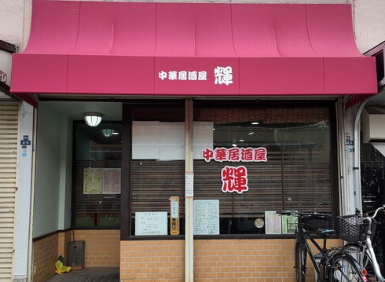

OUR STORY
山椒が効いた本格的な麻婆豆腐、ぷりぷりのチリソース——中華の醍醐味はそのまま、新鮮な海鮮や和食の一品料理まで幅広くお楽しみいただけます。
気さくな店主のもと、お一人様でもグループでも、ふらっと立ち寄れるのが輝の魅力。土日祝日は12時から昼飲みにも対応。大阪・門真で長く愛され続ける居酒屋です。
本格中華
麻婆豆腐・チリソースなど
本場の味を門真で
昼飲みOK
土日祝は12時〜
ゆったりお昼から一杯
HOURS & INFO
L.O. 21:30
定休日月曜日、第2・第4火曜日
※最新の営業情報は Instagram をご確認ください。
ACCESS
大阪府門真市宮野町4-5